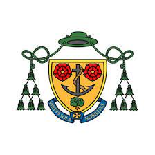

Cyber Security is how individuals and an organization reduces the risk of a cyber-attack. Cyber security’s core function is to keep our electrical devices such as laptops, phones and tablets safe, in order for us to access all the services that we need for work and recreation. .Cybersecurity is how we stay safe online, by protecting our personal data, and by not falling for tricks placed by scammers, which can come in many forms, such as an email.
The internet is a helpful place, allowing us to access various types of content. However, as our reliance on the internet and technology increases, so do the risks associated with them. The internet contains content for everyone, including various types of illegal activities, and it’s surprisingly more common than you think. Additionally, companies encounter threats, such as DNS and phishing attacks. This website will allow you to understand how to protect yourself against these risks.
